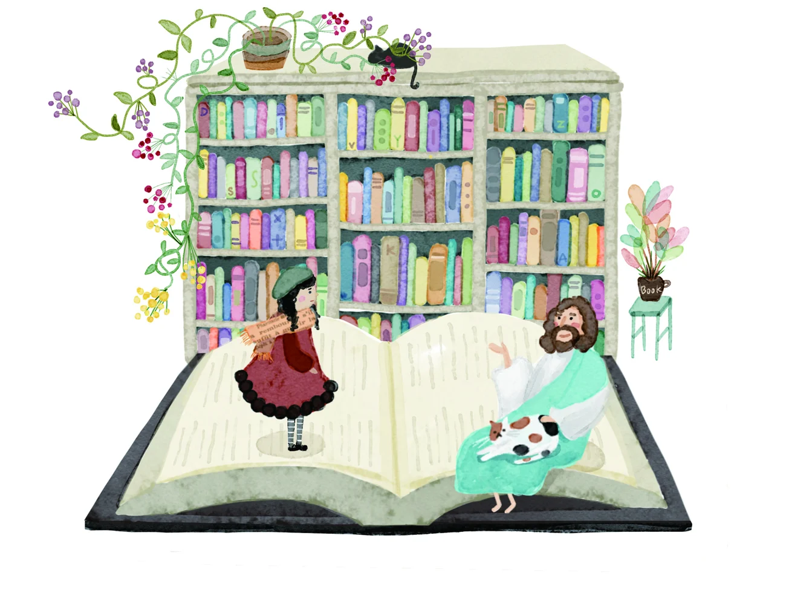
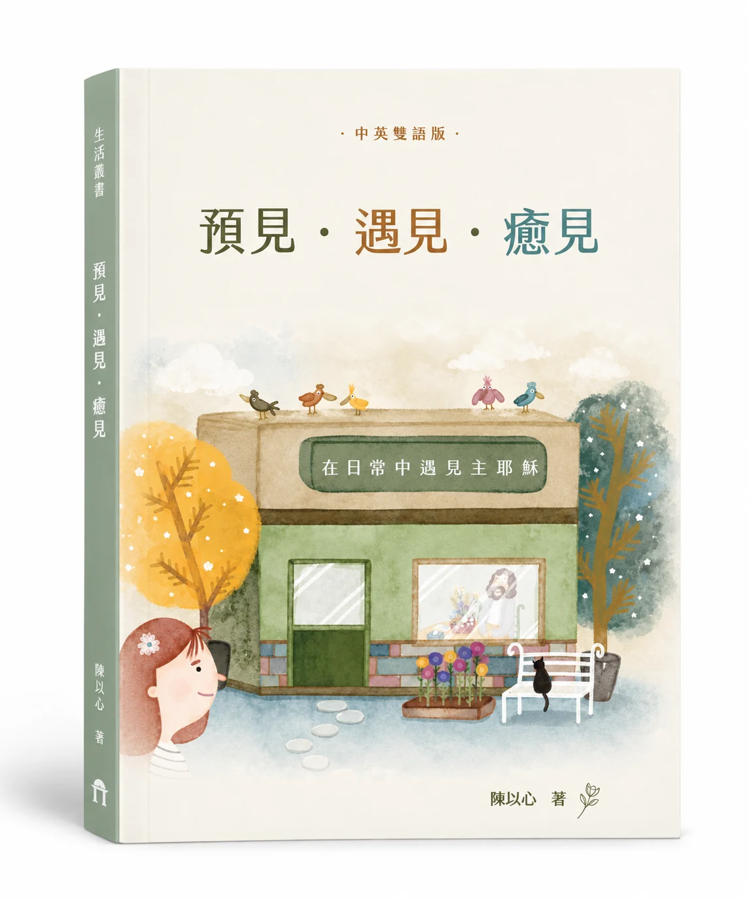
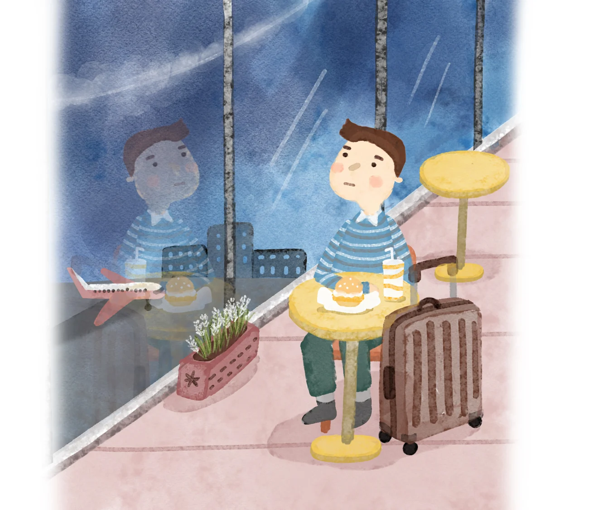
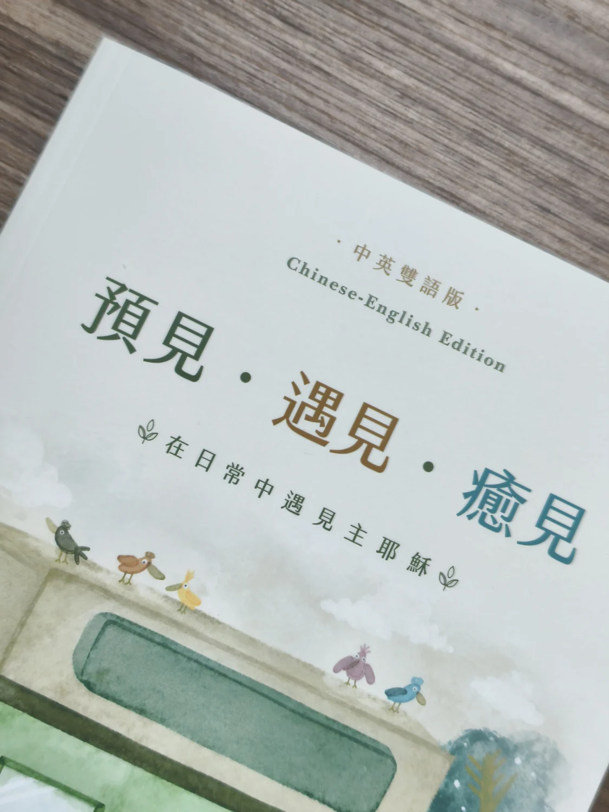
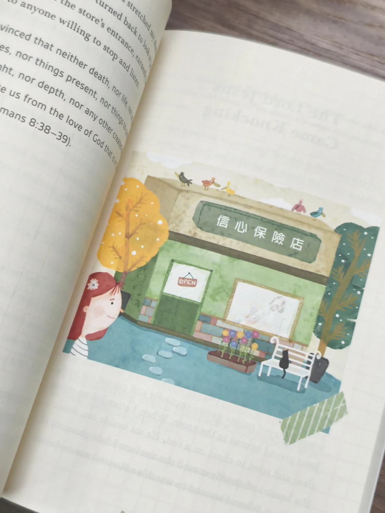
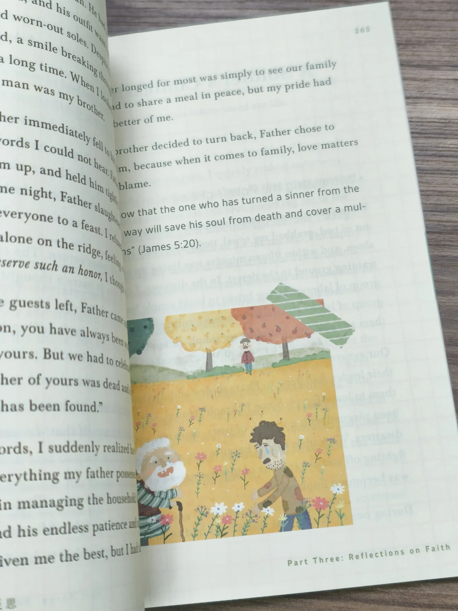

BOOKSTORE / P.64
Meeting Jesus at the Bookstore
Beyond the bestseller shelf,
what is worth returning to?
C298 / LIFE & FAITH Traditional Chinese × English
21 stories of everyday faith · Chinese–English edition
Meeting Jesus in Our Daily Lives
預見．遇見．癒見
在日常中遇見主耶穌
Everyday faith, shared across languages.
Read the original Chinese or the published English translation.

The original Traditional Chinese and English translation in one book.
Begin in familiar places, and share the stories with readers of another language.
01 / ABOUT THE BOOK
Banks, pharmacies, bookstores, airports… In Yi-Hsin Chen’s writing, the places we pass through become settings for encounters with the Lord Jesus.
Through scenes, dialogue, and parables, she brings busyness, comparison, weariness, and our questions into everyday stories, then returns to the words of Scripture. Reading becomes a chance to pause and reflect on faith and life.
Three parts bring together 21 stories, full-color illustrations, and English translations. Read from the beginning, or start with a place that feels familiar.
Through God’s word,
learn to prepare your heart.
In everyday life,
recognize His presence and guidance.
Let a weary heart
find comfort and renewal.
02 / EVERYDAY ENCOUNTERS
Three settings from the book.
Three questions to consider.

BOOKSTORE / P.64
Beyond the bestseller shelf,
what is worth returning to?
BANK / P.79
As we keep accumulating,
what are we storing in our lives?

AIRPORT / P.84
Every time we depart,
where do we truly hope to arrive?
Illustrations by 林佳怡 · The questions above introduce the chapters.
03 / BILINGUAL READING
Choose a story and read Chinese and English side by side.
Or switch to either language on its own.
All three Chinese chapters are complete, including their closing Scripture passages. English selections use the published translation. Read side by side, then continue the complete Chinese text below.
CHINESE CHAPTER / 01
在書店遇見主耶穌
暢銷書架外的永恆真理The Eternal Truth Beyond the Bestsellers
Complete Chinese p.64–66 · English p.202–203
路過一家Ｘ品書店，想說還有一點時間，就走了進去。一如往常的，往我最喜歡的小說區走，在暢銷排行榜前面，赫然發現了主耶穌站在那裡。
One day, when I had some time to spare, I went to a bookstore. As usual, I headed straight to the fiction section. As I stood in front of the bestsellers, I was startled to see Jesus.
我好奇走到主耶穌旁邊，只見主耶穌左右仔細看了一遍以後，喃喃自語道：「怎麼沒看見聖經呢？」我莞爾一笑說：「現在有許多的書教你與自己、與別人的情緒和好，教你面對死亡，教你如何培養成功的習慣，甚至最近很紅的電影改編的小說，這些才是現在的趨勢主流。聖經對於許多人來講是教科書，大概不在暢銷書的範疇吧！」
Curious, I walked over to Him. He was looking at the collection of books and muttering to Himself, “Why don’t I see the Bible here?”
I chuckled and said, “Nowadays, there are a lot of books that teach people how to reconcile with their own emotions and those of others, how to face death, and how to cultivate habits for success. There are even novels adapted from popular films. Those are the current trends. To many people, the Bible is a textbook, not something you’d find on a bestseller list.”
主耶穌卻有點難過，默默地說：「現代的人們物質越豐富，心靈就越發空虛，追求回歸內心，但還是活在虛假中。人饑餓非因無餅，乾渴非因無水，乃因不聽耶和華的話啊！人們以為的不需要，恰恰是我給他們最好的也最需要的聖經啊！」
But Jesus said sadly, “The more materially wealthy people are, the emptier their hearts grow. They seek to restore their inner selves but are unable to do so. ‘Days are coming when I will send a famine on the land, not a famine of bread or a thirst for water, but rather for hearing the words of the LORD.’ People think they don’t need it, but the Bible is the best and most essential gift I’ve given them!”
講完以後，我想了一下，看著主耶穌說：「暢銷書雖然顯眼，也是目前最多人買的，但是會隨著時代汰換，論點也會被後人所推翻；而聖經是神的話，是不改變的，所以才是真正的歷久不衰呢！」主耶穌釋懷地點點頭，我又接著問：「主耶穌怎麼會想來書店呢？」
主耶穌說：「我想找聖經送給願意追求我的孩子們。」
I thought for a moment. “Bestsellers are popular, but only for a while—over time, they will be replaced. The principles in self-help books may also be wrong, and they can be replaced by new theories. But the Bible is the word of God—it is unchanging and eternal, which is why it can truly stand the test of time!”
Jesus nodded, looking relieved. I asked, “Lord, what brings You to this bookstore?”
He replied, “I’m looking for Bibles to give to children who are willing to seek Me.”
The published English excerpt ends above. Continue reading the original Chinese below.
主耶穌跟著我一路走過雜誌、親子教育、企業管理、自然科學、心理學、烘焙、動漫小說……。終於，在書店的最角落，看到了宗教，在最底下的格子看見了聖經，林林總總研經類的書，比聖經的數目種類都還要多。
主耶穌好奇的拿起來翻了幾頁，搖搖頭，又放回去拿了下一本，又搖搖頭，重複看了好幾本不同作者寫的書，卻嘆了口氣：「這些人看似認識我，卻將他們的熱心建立在自己的知識上，順應潮流，修改刪減了許多我的話，選擇附和人而不是選擇尊重我啊！加上沒有聖靈引導明白我的話，他們的路越走越偏，還影響著別人一起往寬廣的大路去。」
耶穌難過地說：「空有基督徒的名，卻沒有基督徒之實！」我聽了主耶穌的話以後，也拿起了幾本書來翻閱，「這些可都是有名的作者呢！甚至有好幾本已經賣到印刷第三版、第四版了！封面標題吸引人，內容平易近人，又帶一些見證恩典在裡面，在主耶穌面前，竟沒有一本是達標的。」
我心想著：「反觀聖經，沒有漂亮的外觀，也沒有吸引人的標題，沒有名人推薦序，也沒有看見主耶穌辦簽名會製造流量與宣傳效果。內容幾百年來沒刪減過，比起上面那些研經書有著顯著的位置，聖經一直被放在不起眼的角落，但是裡面的一字一句，卻是主耶穌留給我們的話，且句句都帶有能力！」
我思考著其中的差異，主耶穌已經把架上祂想要的聖經搜刮一空，往收銀臺走去。
「要收的莊稼多，做工的人少，我要去忙囉！」主耶穌跟我點點頭以後，就跨著步伐離開了！我回過神，跟在主耶穌後面，「請讓我幫祢一起拿！」
在一抹人群中，主耶穌的背影透著堅定，突然覺得頭上柔和的燈光，因為主耶穌的出現，變得暖暖的……。
我向一切聽見這書上預言的作見證：若有人在這預言上加添什麼，神必將寫在這書上的災禍加在他身上；這書上的預言，若有人刪去什麼，神必從這書上所寫的生命樹和聖城刪去他的份（啟二二18-19）。
我實在告訴你們：就是到天地都廢去了，律法的一點一畫也不能廢去，都要成全（太五18）。
CHINESE CHAPTER / 02
在銀行遇見主耶穌
天國帳戶的無限恩典The Infinite Grace of a Heavenly Account
Complete Chinese p.79–83 · English p.222–223
我那天請了下午的假，準備去開銀行的戶頭，自從有小孩後，感覺時間跟錢都不夠用，盤算著也許貸個青年安心成家貸款，減輕一下壓力，排隊排了好一會兒，終於輪到我，櫃員微笑說：「請往三號窗口。」
One afternoon, I went to the bank to apply for a loan for new parents. Ever since having a child, I often felt like I never had enough time or money, and I was hoping this new account would help ease the financial pressure. After waiting in line for quite a while, it was finally my turn. The teller smiled and told me to go to Counter Three.
我走過去一看，卻發現三號窗口的布簾上寫著：「天國銀行專區」。
我以為自己走錯了，正要轉頭，簾子卻自己打開了。
I walked over and noticed that the curtain over the counter said “Kingdom Bank: Special Services.” I thought I had come to the wrong place, but just as I was turning to leave, the curtain opened.
坐在裡面的，是一位白衣男子，溫和的眼神如泉水般清澈。他的名牌上，寫著三個字：「主耶穌」。
我嚇了一跳：「主耶穌？祢……祢怎麼在銀行裡？」
祂笑了：「我一直都在，只是很少人來開戶。」
我把開戶資料放上櫃台，等著主耶穌跟我對基本資料，只見他拿起一疊剛印出的單子，主耶穌翻閱著那些單子，開口唸出來：「焦慮支出：超額；後悔利息：不斷累計；空虛手續費：每日扣款；驕傲收入：超額報稅。」
Seated inside was a man with gentle, clear eyes. He was clothed fully in white. The name written on His name tag was Jesus. Surprised, I asked, “Is that You, Jesus? What are You doing at a bank?” He smiled and replied, “I’ve always been here. Only a few people come to Me to open an account.” I carefully set my application on the counter and waited for Jesus to check my information. Instead, He picked up a stack of freshly printed statements and began to read aloud the current state of my account.
I quickly realized that these were no ordinary statements. Instead of an overdraft on withdrawals, it said “overdraft of anxiety.” Instead of compounding interest, it said “compounding regret.” Instead of service fees, it said “emptiness—incurred daily.” And instead of substantial income, it said “excessive pride.”
我臉都紅了。
祂沒有責備，只是問我：「你要不要考慮，開一個天國帳戶？」
My face flushed. He didn’t rebuke me, but simply asked, “Would you consider opening an account with Kingdom Bank?”
The published English excerpt ends above. Continue reading the original Chinese below.
祂遞給我一張紙，我好奇看了一下：
我瞪大眼：「這麼好？那我現在能開戶嗎？」
祂點頭：「當然。這開放給願意尋求信靠我的所有人！」
我吞了口口水，小聲問：「那……我那些欠債怎麼辦？」
主耶穌站起來，走進辦公室，出來時手上拿著一張「已結清」的證明，上面蓋著紅色的印章——印章上寫著「主耶穌已付清」。
祂對我說：「你過去所虧欠的，我已在十架上為你還清；你現在所擁有的，是我用寶血買來的。」
我眼眶發熱，嘴唇發抖：「我……可以把家人也拉來開戶嗎？」
主耶穌微笑說：「當然可以。這帳戶不限資格與年齡，也永不凍結。只要他們願意來，我都為他們預備好了。」
離開銀行時，我手中拿著那張新的「天國存摺」。上面開戶人寫的是我的名字，但帳戶餘額卻註明：「恩典無限」。
我默默的回頭望向那三號窗口，主耶穌還坐在那裡，一位又一位的人走進來，有的疑惑，有的感動，有的哭著簽下了名字。
有些人一開始遲疑：「可是我信用破產了耶！我所有帳戶都凍結了！」
主耶穌回答：「你在我這裡，不靠信用，而靠恩典。」
有人說：「我以前一直都沒存款，入不敷出，這樣會不會太晚了？」
祂說：「只要今日願意，就不算晚。」
我低頭看著那張帳戶卡，明白天國的帳戶，不是靠錢開的，是靠對神的信心開的，主耶穌誠然擔當我們的需求，赦免我們過去的罪，當我還在地上的銀行追逐利率，卻沒發現在靈裡空空如也時，主耶穌注意到了! 今天的窗口，我想是主耶穌為所有需要祂的人開的，讓我們能獲得真正的心靈滿足！
我來了，是要叫人得生命，並且得的更豐盛（約十10）。
在天上要積攢財寶，在那裡蟲子不能咬，賊也不能偷（太六20）。
祂對我說：「我的恩典夠你用的，因為我的能力是在人的軟弱上顯得完全。」所以，我更喜歡誇自己的軟弱，好叫基督的能力覆庇我（林後十二9）。
CHINESE CHAPTER / 03
在機場遇見主耶穌
天國航班的登機證A Boarding Pass for a Heavenly Flight
Complete Chinese p.84–87 · English p.228–230
拖著厚重的行李箱往手扶梯走，剛下班的我肚子空空，頻繁出差的我似乎機場快變成我第二個家，我熟門熟路的走到麥當勞，今天餐點有點熱銷，點了唯一剩下的麥香魚堡，找了個靠窗可以充電的位置坐下。
As I dragged my heavy suitcase toward the escalator, I heard my stomach growl. Frequent business trips had made the airport feel like my second home. I headed to McDonald’s but saw that most of the items on the menu were sold out. After opting for a simple Filet-O-Fish, I sat down in a seat by the window, next to a power outlet, and started to eat.
大片玻璃窗外，是一片快擦黑的天空，起飛的飛機像是顏料，在黑布上劃亮一道銀光，隨著飛機越變越小，又再次回歸平靜，窗邊霧氣對比機場裡脫外套的人們，看著倒影裡小小的自己站在偌大的機場裡，顯得很渺小，被周圍人潮與空間吞噬。霧氣模糊了玻璃，也模糊了我的心情，倦怠在心頭蔓延開來，忙碌、麻木、孤單，還有一種深深的空虛感！
As twilight deepened into dusk, I watched plane after plane climb into the void, their blinking lights swallowed by the vast, ink-black night. Suddenly, tiredness washed over me. All at once, I felt busy, numb, lonely, and deeply empty inside.
吃完飯，我拔掉充電線，起身前往櫃檯托運行李，這次搭的航空剛好在最角落的櫃台，我嘆了口氣，認命地拖著行李往前走，途中我瞥見一個小且不起眼的櫃台，沒標示任何航空公司，頭上看板寫的目的地卻是天國，四周走動的旅客似乎對這櫃台似而不見，隔排櫃台前面大排長龍的人潮，吱吱喳喳的聲音在機場迴響，這裡反而有種冷清感，只有它靜靜地佇立在一旁。
After finishing my meal, I unplugged my charger and prepared to head to my check-in counter; seeing that the counter was on the other side of the lobby, I sighed and started walking toward it. On my way, I noticed a small, inconspicuous counter. It didn’t have an airline logo, just a sign that read “Destination: Heaven.” Strangely, no one else seemed to have noticed it. While the other counters were bustling with long lines of people, this one stood quiet, almost hidden.
我走進想瞭解更多資訊，櫃台內有個身影正在忙碌，穿著簡單且潔白的衣裳！當祂抬起頭來時，那瞬間我愣住了！是主耶穌，怎麼來當地勤了？
「你準備好了嗎？」祂望著我，眼神深邃又充滿慈愛，像能看透我的一切。
Curious, I walked toward the counter. Behind it stood a figure in simple white clothing; when He looked up, my breath caught. It was Jesus—but why was He working at an airport?
“Are you ready?” He asked, gazing at me. His eyes were deep and full of love, and I felt that He was seeing through me.
「準備好了嗎？」我自問我自己，身上皺皺的襯衫，厚重的行李箱裡面裝著還在追求的目標、停不下來的行程，還有我一直背負的名利與說不出的疲憊空虛。
「主啊！我 ... 我還沒當到主管，還有好多國家沒去過，還要十年我就繳清房貸，擁有一間屬於自己的房子……」我認真地想我還沒達成的遺憾，又遲疑地說 :「我還沒領人來信主，也還沒把聖經讀完一遍，我的阿公還在慕道，也因為工作忙碌，一陣子沒有接聖工了！我還沒準備好要搭這班飛機……」我聲音越來越小聲。
“Am I ready?” I repeated the question. I looked at my wrinkled shirt, then at the heavy suitcase I was carrying: it was packed with my goals, my never-ending schedule, and my ambitions, but also with a weariness and emptiness that I couldn’t put into words.
“Lord, I… I haven’t become a manager yet. There are still so many countries I haven’t visited. I still need ten more years to pay off my mortgage, to finally own a house…” My voice faltered. “I haven’t brought anyone to Christ, I haven’t finished reading the whole Bible, my grandfather is still seeking the truth, and I’ve been too busy with work to serve at church. I’m not ready to board this plane yet…” My voice trailed off into a whisper.
主耶穌沒有責備，只是溫柔地看著我 :「你一直都在忙，但你想過你要去哪裡嗎？哪裡才是你真正的目的地？」我心頭一震，我一直在奔波，忙著生活，忙著為自己安排下一班飛機，我一直在飛。但走到人生的盡頭，我的靈魂最後會在哪裡降落呢？
Jesus did not rebuke me. Instead, He simply looked at me, His expression gentle. “You are always busy—but have you thought about where you are going? What is your true destination?”
His words pierced my heart. I had been rushing from flight to flight, always planning my next trip. But when I reached the end of my life’s journey, where would my soul go?
The published English excerpt ends above. Continue reading the original Chinese below.
祂接著說 :「若不藉著我，沒有人能到父那裡去，這架飛機，是我用寶血換來的，而通往天國的登機證，是從父差來的保惠師以印為證，至於登機條件……」
祂指著一張紙，上面突然出現了字，寫著：
「你要搭這班去天國的直飛班機嗎？」主耶穌微笑地問，「世界上的航班會延誤會取消，但天國的航班永不誤時，我在等你們回來，這裡永遠為我愛的孩子保留座位，但有一天登機門會關閉，在那之前，記得一定要來劃位！」
我眼眶紅了，心中的大石頭放了下來，我在這個人生的機場裡面，只是個匆忙的過客，迷失在世上物質的美好，但主耶穌卻已經在登機口等著我一起啟航，祂早已為我預備了一切，我卻一直未停下腳步去回應祂。那天，我繼續去搭了飛機，但我知道，我要調整我的行程，把更多的時間留給主耶穌，因為即便世上的事情再忙碌空虛，有個確實的平安是神所應許的，也是別人拿不走的，我改變了我的目標，眼光轉向了天國的登機門，我知道在那裡，主耶穌一直在等我，為我敞開！
我將這些事告訴你們，是要叫你們在我裡面有平安。在世上你們有苦難，但你們可以放心，我已經勝了世界（約十六33）。
凡父所賜給我的人，必到我這裡來；到我這裡來的，我總不丟棄他（約六37）。
你們既聽見真理的道，就是那叫你們得救的福音，也信了基督，既然信祂，就受了所應許的聖靈為印記。這聖靈是我們得基業的憑據，直等到神之民被贖，使祂的榮耀得著稱讚（弗一13-14）。
Read more everyday stories and the complete English translations in the bilingual book.
Bring this bilingual book home04 / CONTENTS
From everyday encounters to the insights of parables,
and inward reflections on faith.
05 / INSIDE THE BOOK
Chinese and English, with full-color illustrations,
carry you from one story into another.



BRING THE BOOK HOME
Anticipation, Encounter, Healing
Meeting Jesus in Our Daily Lives
See the bookstore for current prices, offers, and availability.